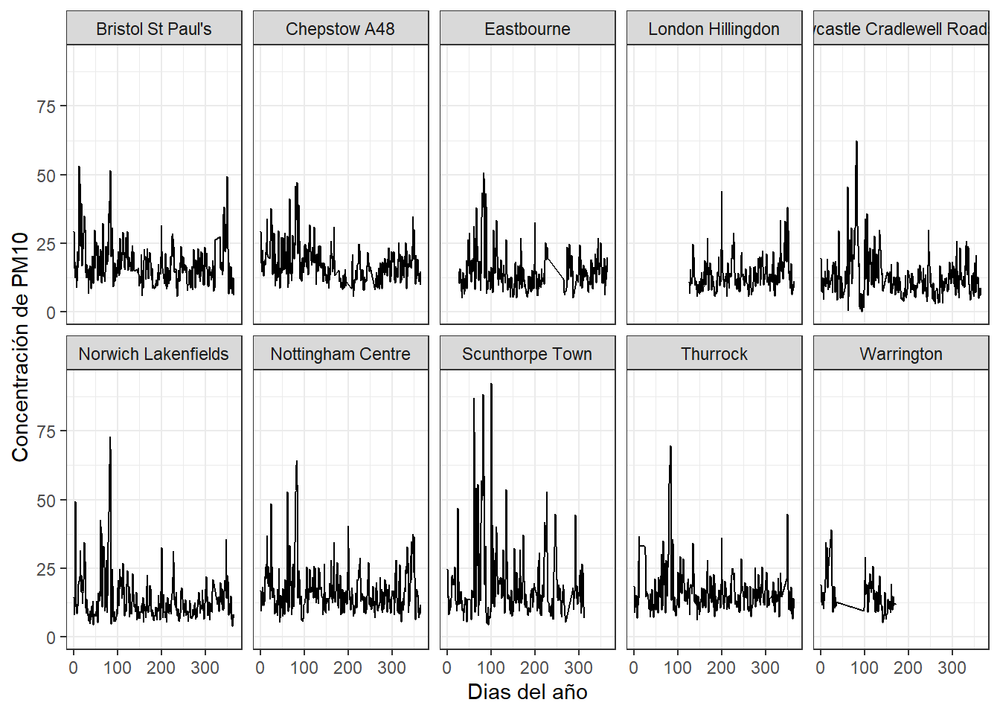
Kriging Funcional
Estadistica espacial
Contaminacion de aire
La contaminación en el Reino Unido es un desafío ambiental que requiere atención y acción. Aunque el país ha tomado medidas para reducir las emisiones y mejorar la calidad del aire, aún se enfrenta a problemas significativos. Las principales fuentes de contaminación en el Reino Unido incluyen las emisiones de gases de efecto invernadero de los sectores de transporte y energía, así como la contaminación del aire debido al tráfico vehicular y la quema de combustibles fósiles. Estos problemas tienen impactos negativos en la salud humana, la calidad del aire y el medio ambiente en general, lo que ha llevado a la implementación de políticas y regulaciones más estrictas para abordar la contaminación y avanzar hacia una economía más limpia y sostenible.
En los últimos años la predicción ha tomado un rol importante para una infinidad de casos, especificamente en el aspecto ambientar la predicción de de los niveles de material particulado en el aire es fundamental para tomar medidas preventivas y mitigar los efectos adversos en la salud y el medio ambiente. Existen varios metodos de prediccion, Debido a las limitaciones en cuanto a dimensionalidad y limites computacionales del modelado espacio temporal se abordara la geoestadistica como solucion a estas limitaciones.
Obtencion de los datos
La base de datos seleccionada para este trabajo proviene del departamento de Medio Ambiente, Alimentación y Asuntos Rurales del Reino unido,de la cual se extrae datos de la fuente de informacion del Reino Unido.
El reino unido mediante su agencia ambiental posee alrededor de 300 sitios de monitoreo ambiental los cuales se subdividen en redes que adquieren informacion particular de acuerdo al contaminante. Existen dos tipos de redes de monitoreo en el reino unido:
- Redes automaticas: estas permiten la captura de datos de contaminantes que se producen por hora. La recopilación de datos comprende datos desde 1972 para algunos sitios:
- Automatic Urban and Rural Network (AURN)
- Automatic Hydrocarbon Network (AHN)
- Automatic London Network
- Locally-managed automatic monitoring
- Redes no automaticas: La recopilacion de los datos se da para contaminantes que se producen con menor frecuencia (diaria,semanal, mensual) donde las muestras son recopiladas por medios físicos y son sometidas a análisis fisico-quimico que permite calcular la concentración de los resultados, a continuación se relacionan las redes de monitoreo para esta categoría:
- UK Eutrophying & Acidifying Network (UKEAP)
- Upland Waters Monitoring Network
- Heavy Metals Network
- Nitrogen Dioxide Diffusion Tube (1993 to 2005)
- Smoke and Sulphur Dioxide
- Black Carbon Network
- PAH
- Toxic Organic Micro Pollutants (TOMPs)
- Non-Automatic Hydrocarbon Network
- Particle Numbers and Concentrations Network
- JAQU privacy notice
- UK Urban NO2 Network
Dentro de los enlaces relacionados se puede recopilar la información disponible para cada red.
El gobierno del Reino Unido permite la extracción, analisis e interpretacion de los datos de codigo abierto y libre mediante el uso del paquete Openair usando R. Para la adecuación de los datos se realiza el procedimiento descrito en https://rspatialdata.github.io/air_pollution.html#Installing_the_openair_packageR mediante la integracion del paquete tidyverse.
Para la extracción de los datos se verifican algunas de las redes de monitoreo existentes y posterior se escogen las variables \(\ce{NO2}\) y PM\(_{10}\) para las cuales se verifican sus redes de monitoreo:
Analisis exploratorio
El Reino Unido se caracteriza por tener una red integral de monitoreo ambiental que proporciona gran cantidad de datos cruciales para comprender y abordar los desafíos ambientales y proteger la salud de las personas y el entorno natural. Se realiza la exploración datos diarios de 10 a través del 2022 de estaciones aleatorias dentro del reino unido.
Al verificar los datos, esto no permite un modelado adecuado de los datos, ya que estos cambian a través del día por lo cual es conveniente tomar los datos por hora de 50 estaciones aleatorias por 7 dias, para esto obtiene los datos del 2023-01-01 00:00:00 al dia 2023-01-07 23:59:59.
A continuación se observan los datos del día 01-02-23 por hora.
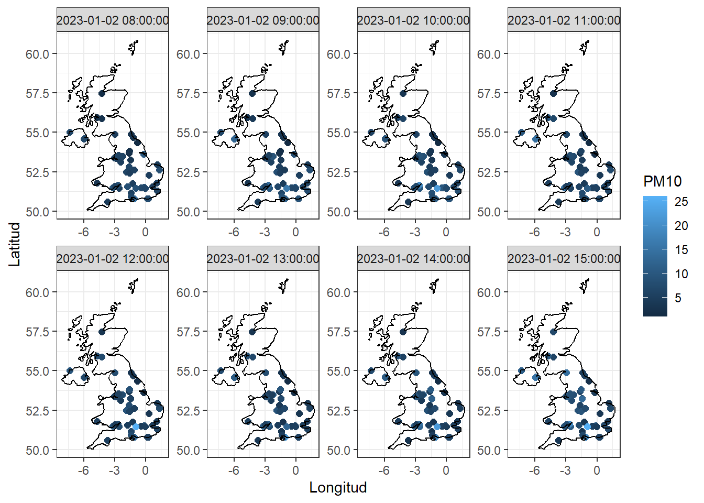
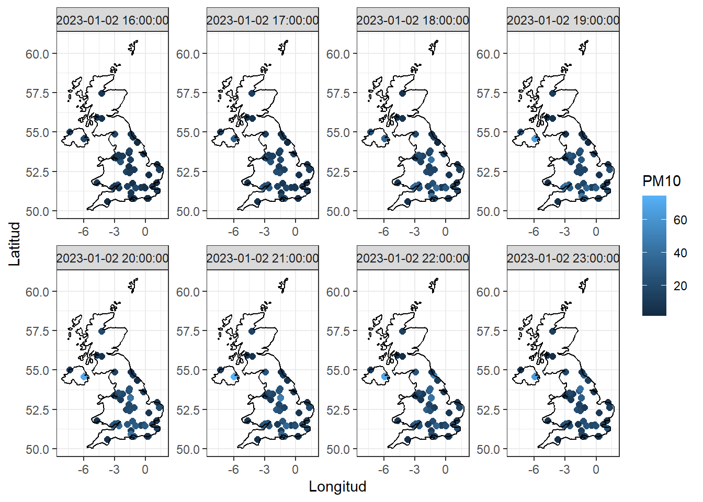
Para las 50 estaciones obtenidas se evalua el material particulado de 10 micras en funcion del tiempo
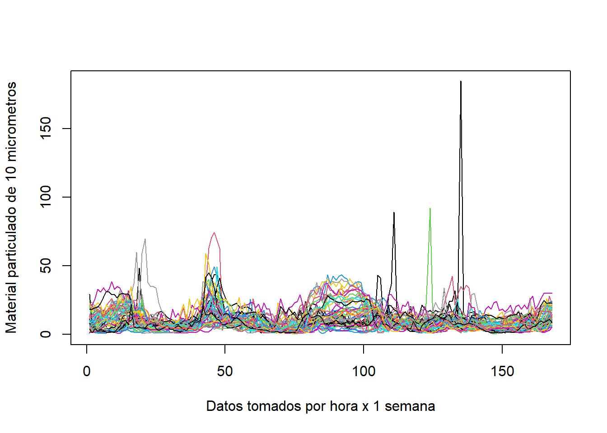
De igual se identifican que existe curvas atipicas dentro de los datos las cuales corresponden las curvas 1, 2 y 38 como se observa a continuación
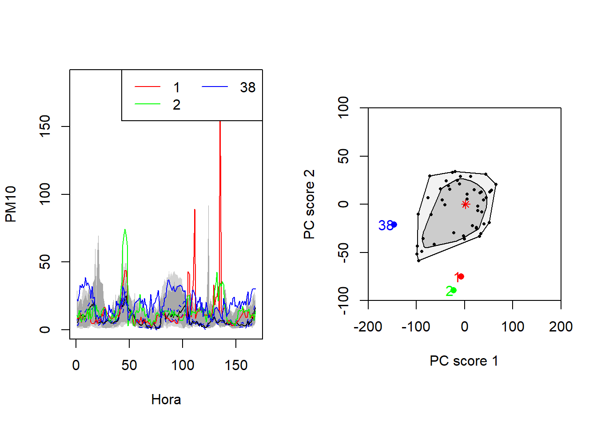
Si bien se identifican como posibles curvas atípicas, dentro de este estudio se tendrán en cuenta ya que no conoce la naturaleza del fenómeno, los valores de la curva 1 y 2 pueden estar asociadas a múltiples factores como error en la medición, falla en lectura o en el instrumento de medición
Para el suavizamiento de las curvas de material particulado se utiliza el metodo no parametrico B-splines- Como se observa en la grafica de material particulado en función del tiempo, estas curvas presentan una alta rugosidad, sin embargo al ajustar una cantidad de bases muy altas, estas presentaban valores de material particulado por debajo de 0, lo cual no tiene sentido fisico, razón por la cual se definieron un total de 10 bases y un alto parametro de penalizacion \(\lambda=10\)
library(fda)
nbasis <-10
hourange <- c(1,nrow(PM10))
lambda=0.1
harmaccelLfd <- vec2Lfd(c(1,10), hourange)
hourbasis_Bsplines <- create.bspline.basis(hourange,nbasis)
PM10_fdPar_Bspline<-fdPar(fdobj=hourbasis_Bsplines,Lfdobj=harmaccelLfd,lambda)
PM10_fd_Bspline <- smooth.basis(argvals=1:nrow(PM10),PM10,PM10_fdPar_Bspline)
PM10_fd_Bspl=PM10_fd_Bspline$fd
par(mfrow=c(1,1))
plot(PM10_fd_Bspl)[1] "done"lines(PM10_fd_Bspl,col=rainbow(10),lwd=2,lty=1)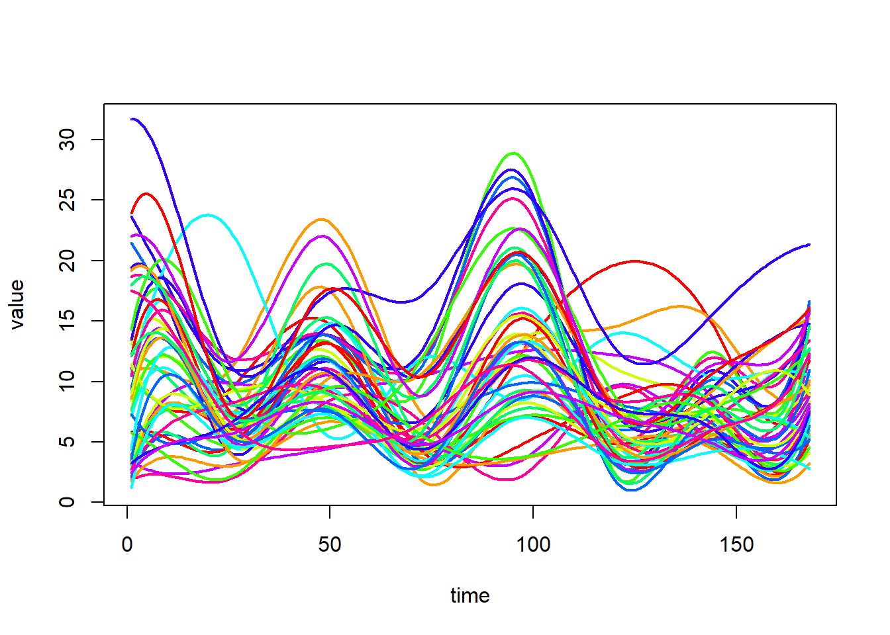
PCA=pca.fd(PM10_fd_Bspl,centerfns=T)
PCA=pca.fd(PM10_fd_Bspl,3,centerfns=T)
par(mfrow=c(2,2),mar = c(2.5, 2.5, 2.5, 2.5))
plot(PCA,cex.main=0.8)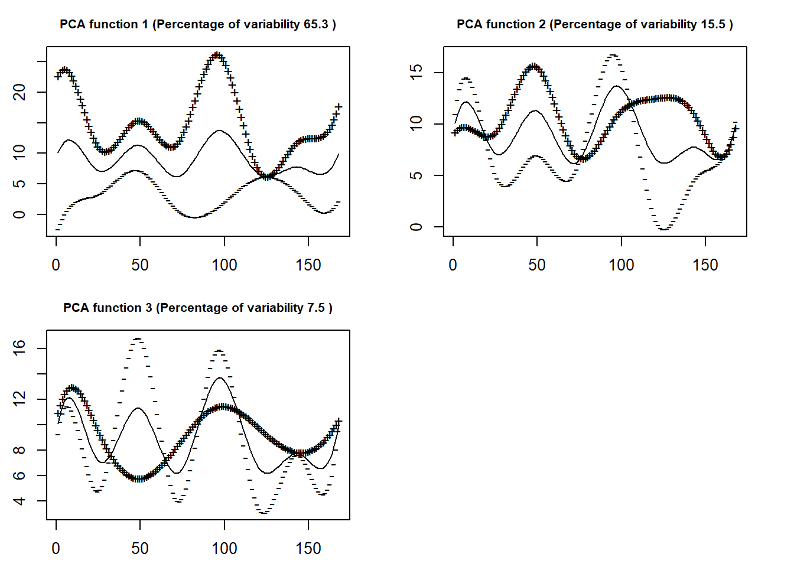
Con el fin de reducir la dimensionalidad, se utiliza el análisis de componentes principales, para esto se tomaron 3 componentes principales las cuales ajustan el 88% de la variabilidad espacial del campo aleatorio. Esto se puede observar en la siguiente gráfica.
PCA$varprop[1] 0.65291339 0.15537652 0.07543315head(PCA$scores) [,1] [,2] [,3]
[1,] 3.803601 68.048593 12.6645150
[2,] 22.923667 74.659762 -16.2869376
[3,] -4.346688 17.259694 0.7487753
[4,] 68.996534 -18.534415 -12.3475882
[5,] -30.078440 -7.716014 -2.2322568
[6,] 16.796767 -8.786296 -11.2852024Los puntajes obtenidos para la primera componente se adjuntan a las coordenas de cada lugar
fecha <- ymd("2023-01-01")
PolutionUK <- PolutionData[,3:5] %>%
filter(date(PolutionData$Fecha) == fecha, hour(PolutionData$Fecha) == 0)
PolutionUK <-data.frame(PolutionUK,PCA$scores[,1]) %>%
rename(Scores = PCA.scores...1.)
head(PolutionUK,50) sitio Longitud Latitud Scores
1 Belfast Centre -5.928833 54.59965 3.8036012
2 Belfast Stockman's Lane -5.974944 54.57259 22.9236669
3 Birmingham A4540 Roadside -1.874978 52.47615 -4.3466875
4 Bristol St Paul's -2.584482 51.46284 68.9965341
5 Burton-on-Trent Horninglow -1.635718 52.82105 -30.0784398
6 Canterbury 1.098061 51.27399 16.7967674
7 Cardiff Centre -3.176250 51.48178 67.7122976
8 Cardiff Newport Road -3.152305 51.49096 76.5641660
9 Carlisle Morton A595 -2.964955 54.88582 0.2299276
10 Chepstow A48 -2.678731 51.63809 69.6942643
11 Chesterfield Loundsley Green -1.454946 53.24413 -45.2608231
12 Chesterfield Roadside -1.456928 53.23175 -32.4985241
13 Chilbolton Observatory -1.438228 51.14962 -5.0571812
14 Coventry Allesley -1.560189 52.41163 -18.0916231
15 Crewe Coppenhall -2.453492 53.11594 -42.4225404
16 Derry Rosemount -7.331179 55.00282 25.4592968
17 Dewsbury Ashworth Grove -1.637111 53.69310 -40.2938997
18 Eastbourne 0.271611 50.80578 49.1998599
19 Glasgow High Street -4.238214 55.86094 -63.4351591
20 Greenock A8 Roadside -4.734421 55.94408 -61.3513781
21 Hartlepool St Abbs Walk -1.203838 54.68324 -46.9584604
22 High Muffles -0.808820 54.33450 -68.7157065
23 Immingham Woodlands Avenue -0.213324 53.61924 -40.5954818
24 Inverness -4.241451 57.48131 -37.0564166
25 Leeds Centre -1.546472 53.80378 -27.3825830
26 Leicester University -1.127182 52.61990 -30.5708855
27 Liverpool Speke -2.844333 53.34633 -29.8037958
28 London Bloomsbury -0.125889 51.52229 32.8331549
29 London Harlington -0.441614 51.48879 -11.8843938
30 London Hillingdon -0.460861 51.49633 14.0959344
31 London Honor Oak Park -0.037418 51.44967 6.4769433
32 Lullington Heath 0.181250 50.79370 43.2001436
33 Manchester Piccadilly -2.237881 53.48152 -16.0251742
34 Narberth -4.692370 51.78262 54.0680614
35 Newport -2.977281 51.60120 43.4726071
36 Norwich Lakenfields 1.302686 52.61482 -9.0290639
37 Oxford St Ebbes -1.260278 51.74481 15.2291434
38 Portsmouth Anglesea Road -1.095558 50.79834 121.7484448
39 Reading London Road -0.940382 51.45490 71.3638502
40 Salford Eccles -2.334139 53.48481 -22.7471685
41 Southampton Centre -1.395757 50.90817 68.1645929
42 Southend-on-Sea 0.678331 51.54417 -5.0042761
43 St Osyth 1.049010 51.77787 8.5535058
44 Sunderland Silksworth -1.406878 54.88361 -57.4494241
45 Swindon Walcot -1.765678 51.55806 17.0650882
46 Weybourne 1.122017 52.95049 -51.7005099
47 Wicken Fen 0.290917 52.29850 -24.1135891
48 Wigan Centre -2.638139 53.54914 -28.3802029
49 Wirral Tranmere -3.022722 53.37287 -40.2110742
50 Yarner Wood -3.716510 50.59760 -7.1873894Los puntos espaciales donde se utilizara el puntaje obtenido de la primera componente principal se observa en el siguiente mapa,
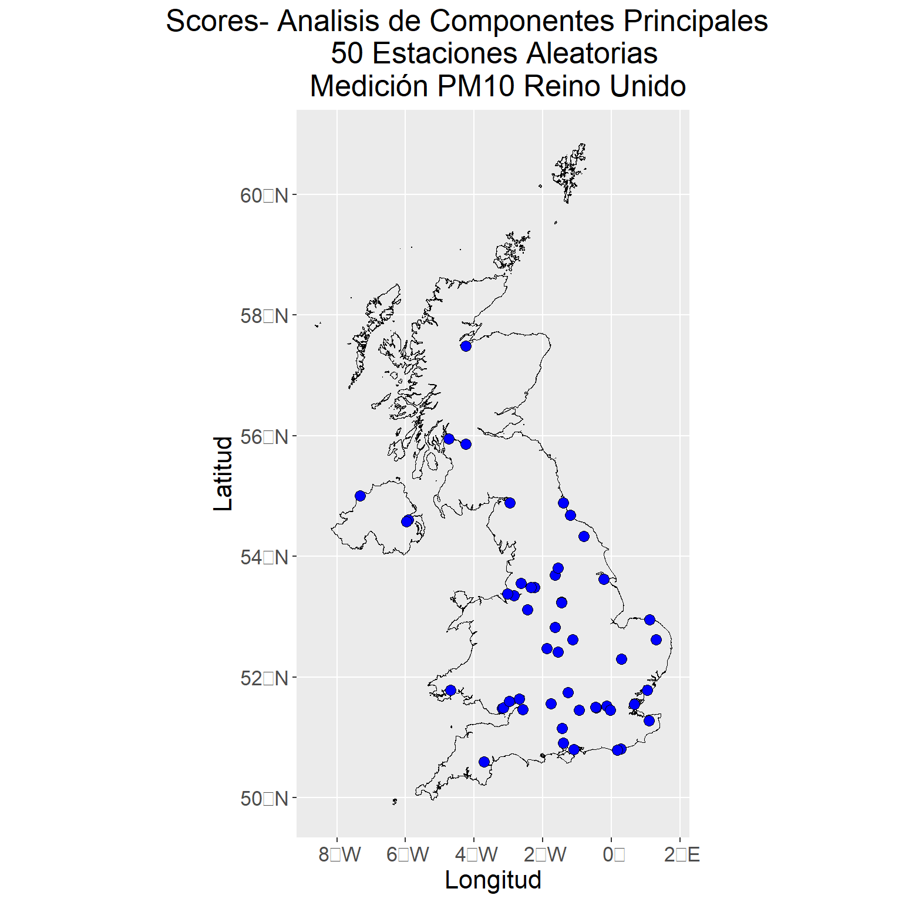
coordinates sitio Scores
1 (146272.1, 529828.1) Belfast Centre 3.803601
2 (143125.3, 526986.9) Belfast Stockman's Lane 22.923667
3 (408490.7, 286516.8) Birmingham A4540 Roadside -4.346688
4 (359400.6, 173979.1) Bristol St Paul's 68.996534
5 (424545.7, 324933.8) Burton-on-Trent Horninglow -30.078440
6 (616063.3, 157376) Canterbury 16.796767Se realiza el cambio de coordenadas.
Para la predicción en un tiempo y espacio definido, es necesario modelar la variabilidad es pacial mediante el semivariograma del campo aleatorio utilizando los puntajes obtenidos del ACP, para esto se consideran 3 modelos de semivariograma, el modelo exponencia, gaussiano y el modelo wave.
Inicialmente se genera el semivariograma considerando las distancias disponibles.
library(gstat)
PolutionUK_sf <- st_as_sf(PolutionUK2, coords = c("X", "Y"))
var <- variogram(PolutionUK_sf$Scores ~ 1, PolutionUK_sf)
plot(var, pl = T)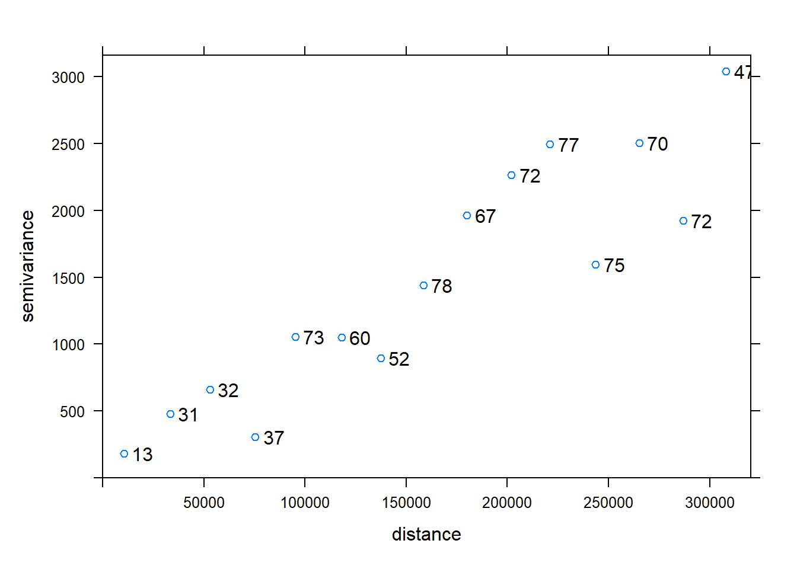
Sin embargo se realiza un ajuste de distancia con el fin de obtener una cota superior en el semivariograma
var2 <- variogram(PolutionUK_sf$Scores ~ 1, PolutionUK_sf, cutoff=160000)
plot(var2, pl = T)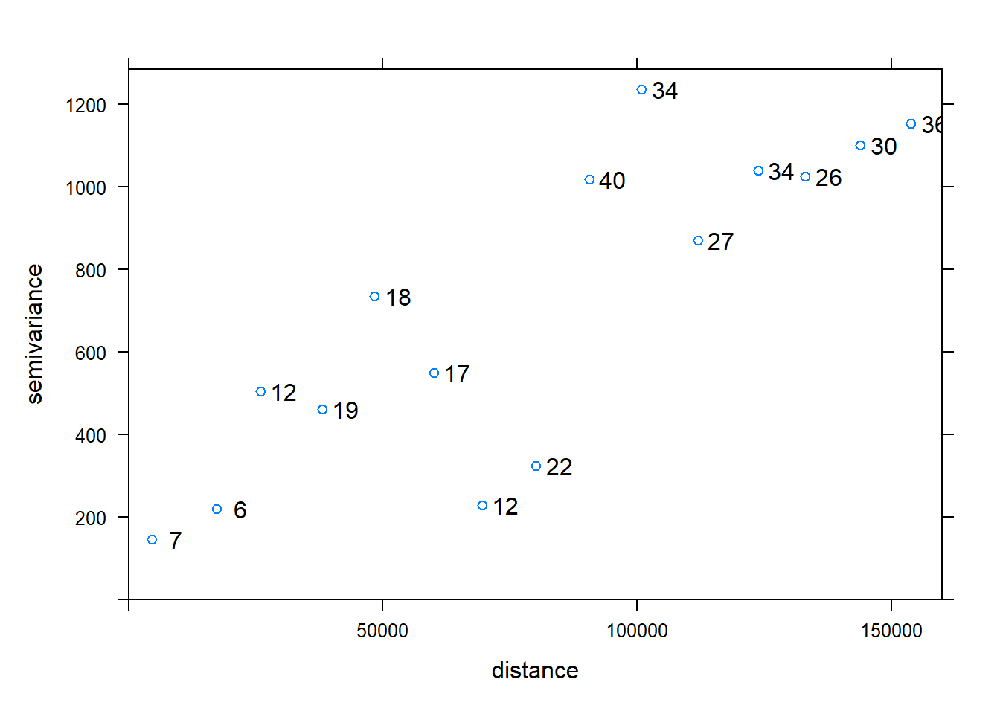
Una vez definidos la distancia, se realiza el ajuste de los modelos propuestos. Inicialmente se realiza un ajuste de cada función a ojo, y mediante la función fit.variogram del paquete gstat se realiza el ajuste la función
Modelo exponencial
variog1 <- vgm("Exp",
psill = 1650,
range = 130000)
plot(var2, variog1 , pl = T)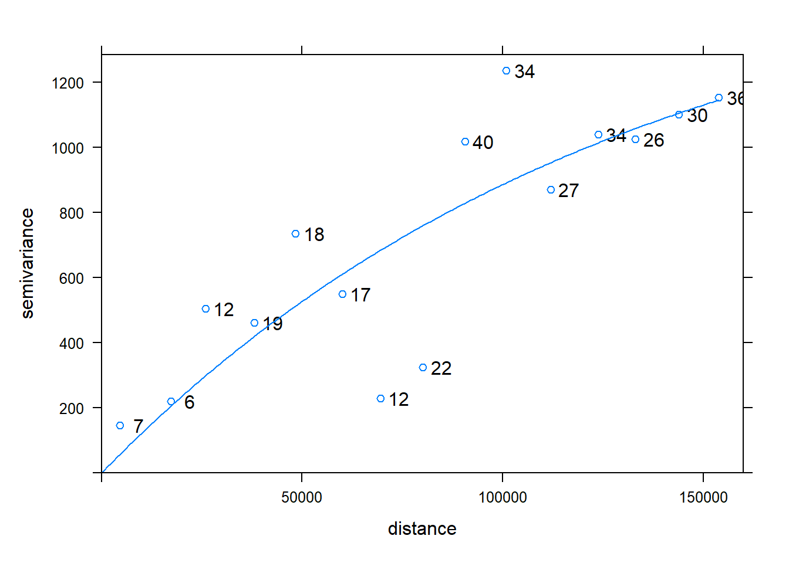
variog1fit <- fit.variogram(object = var2,
model = variog1)
variog1fit model psill range
1 Exp 935.0562 38369.86plot(var2, variog1fit, pl = T)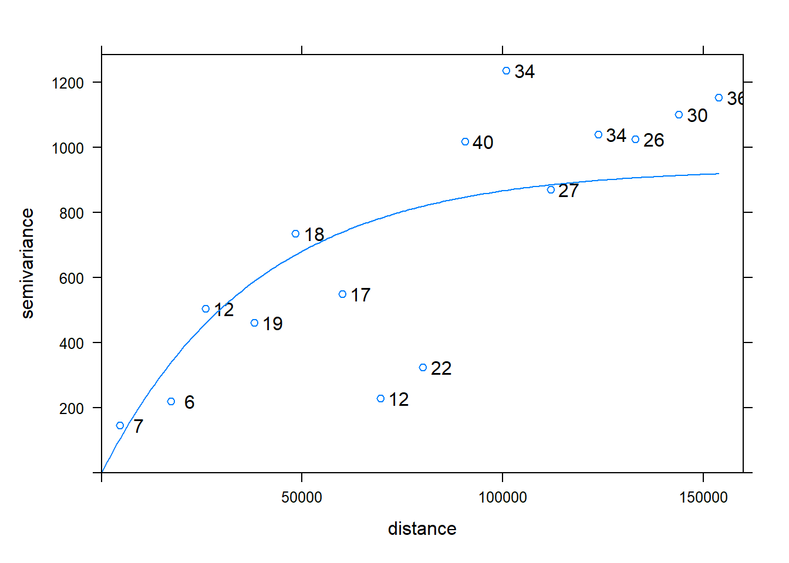
Modelo Gaussiano
variog2 <- vgm("Gau",
psill = 1450,
range = 120000)
plot(var2, variog2, pl = T)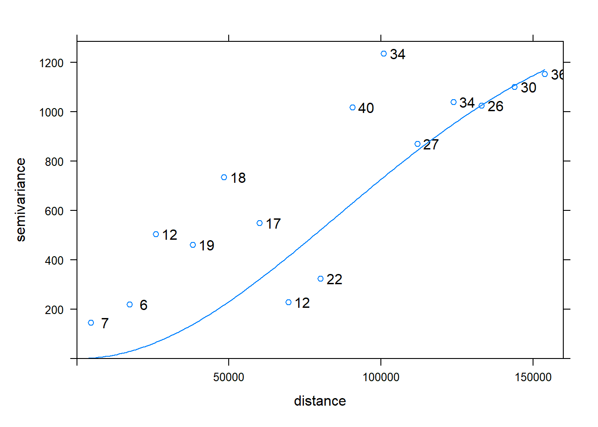
variog2fit <- fit.variogram(object = var2,
model = variog2)
variog2fit model psill range
1 Gau 554.4821 8335.315plot(var2, variog2fit, pl = T)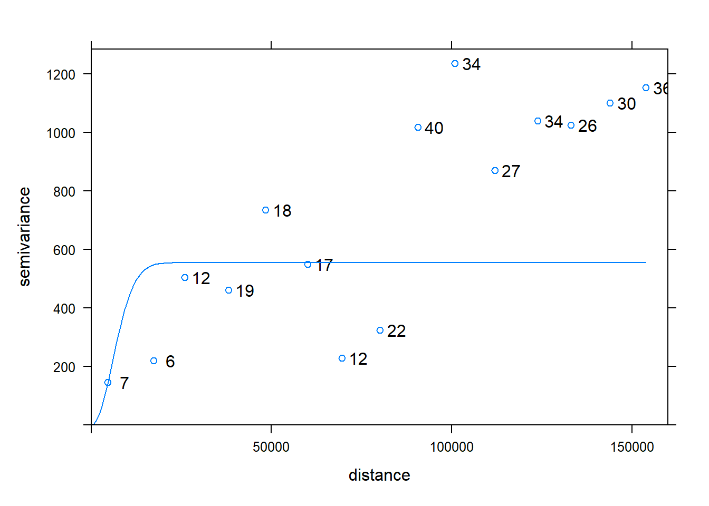
Modelo Wave
variog3 <- vgm("Wav",
psill = 1150,
range = 140000)
plot(var2, variog3, pl = T)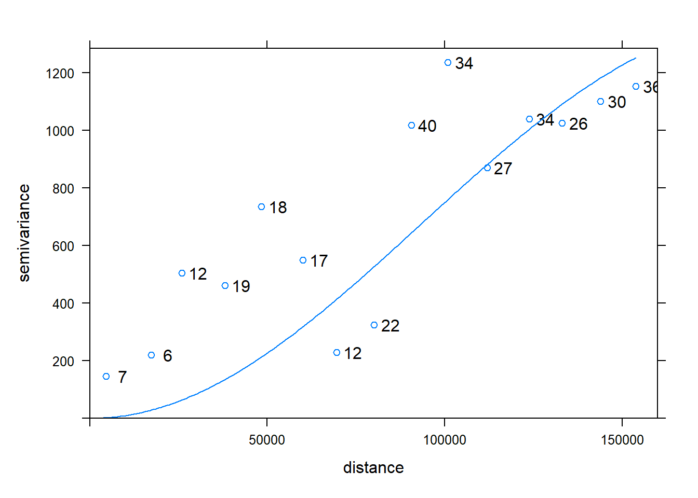
variog3fit <- fit.variogram(object = var2,
model = variog3)
variog3fit model psill range
1 Wav 1022.421 140000plot(var2, variog3fit, pl = T)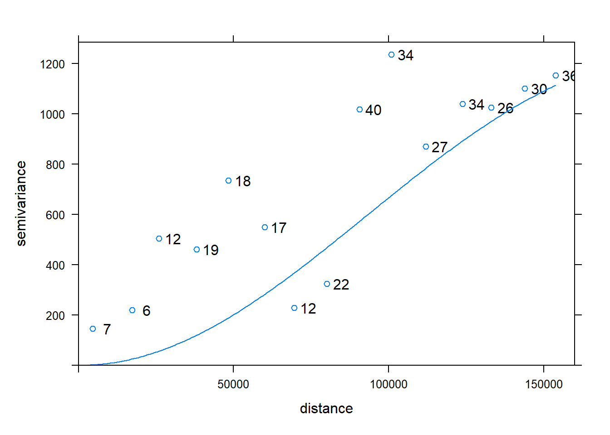
Seleccion del modelo
El método seleccionado se realiza teniendo en cuenta el error cuadrático medio de cada modelo.
| model | psill | range | MSE |
|---|---|---|---|
| Exp | 935.1 | 38370 | 60883 |
| Gau | 554.5 | 8335 | 146571 |
| Wav | 1022 | 140000 | 88937 |
Posterior se realiza el ajuste del semivariograma y la grilla de predicción para el puntaje de la primera componente.
variog4 <- gstat::gstat(id = "Scores",
formula = Scores ~ 1,
model = variog1fit,
data = PolutionUK_sf)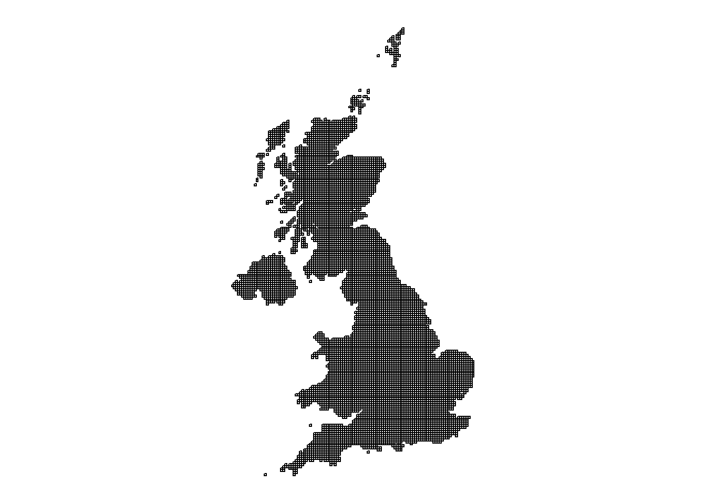
Es asi como se obtiene el mapa de predicción para los puntajes junto a la varianza de predicción.
[using ordinary kriging][1] "Scores.pred" "Scores.var" 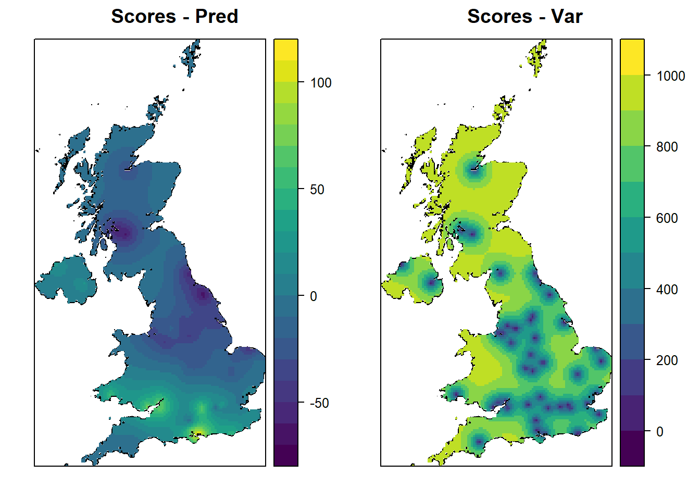
Con los puntajes predichos y la representación de las curvas obtenidas mediante ACP se obtienen las funciones para toda la grilla de predicción.
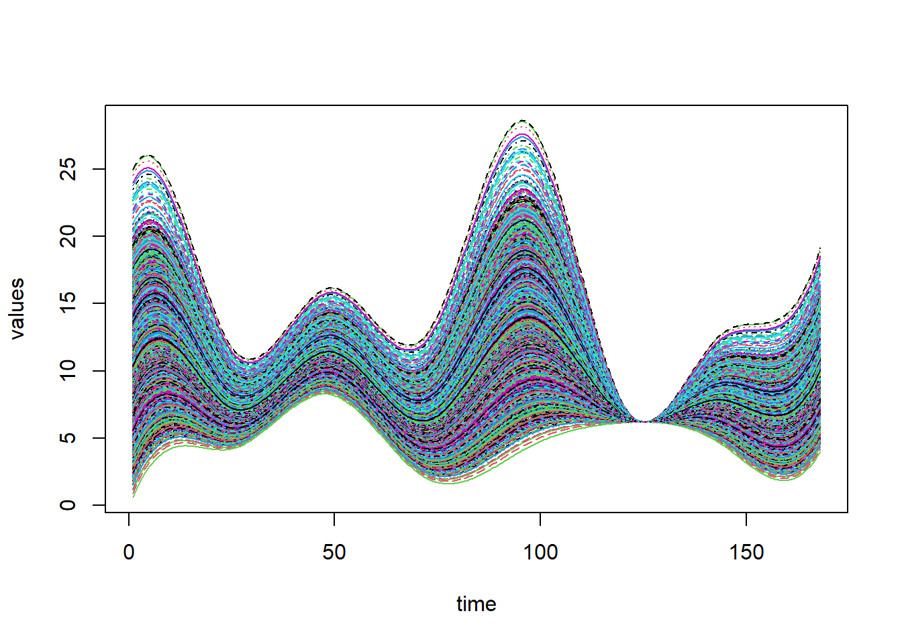
Mapa de predicciones
Con curva predicha en los lugares no muestreados se genera el mapa de predicción de material particulado para todo el campo aleatorio espacial para el tiempo 11. El mapa de predicción se obtiene a continuación:
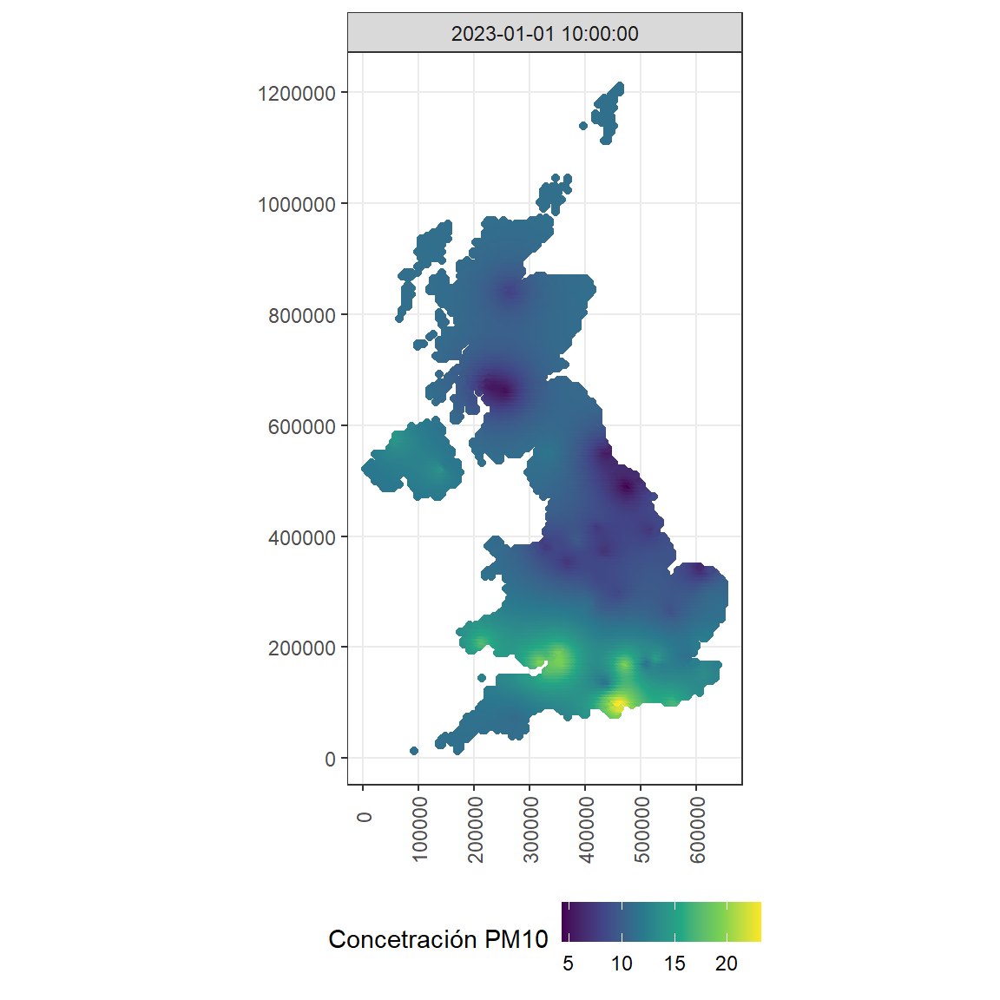